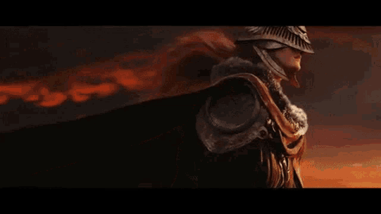
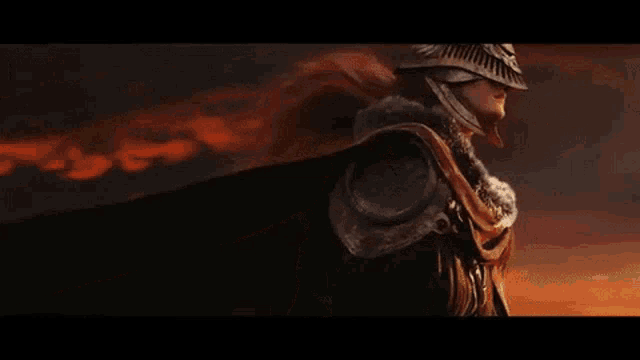

Hello, I'm David Graham, a graphite pencil enthusiast with a passion for creating intricate and detailed artwork.
Originally from Stockport, Manchester, I have spent the past 23 years living in Eindhoven, NL, working and immersing myself
in the vibrant Dutch culture. My artistic journey began around 5 years ago and has been shaped by my fondness for capturing the detail and depth
of subjects using graphite pencils. I strive to bring my creations to life through
intricate shading and delicate details. When I'm not drawing, you'll often find me immersed in the captivating worlds of the Soulsbourne series,
indulging my passion for gaming. I find inspiration in the immersive storytelling and challenging gameplay,
which fuels my creativity and has pushed me to explore new artistic horizons.
My favourite movie has to be Deadpool and my favourite TV show is Forged in Fire. I recently had the opportunity to visit
a Forge in Herefordshire and forge my own unique kukuri/bowie knife myself.
Join me on this artistic adventure as I continue to pursue my passion and share my artistic vision with the world."
 
